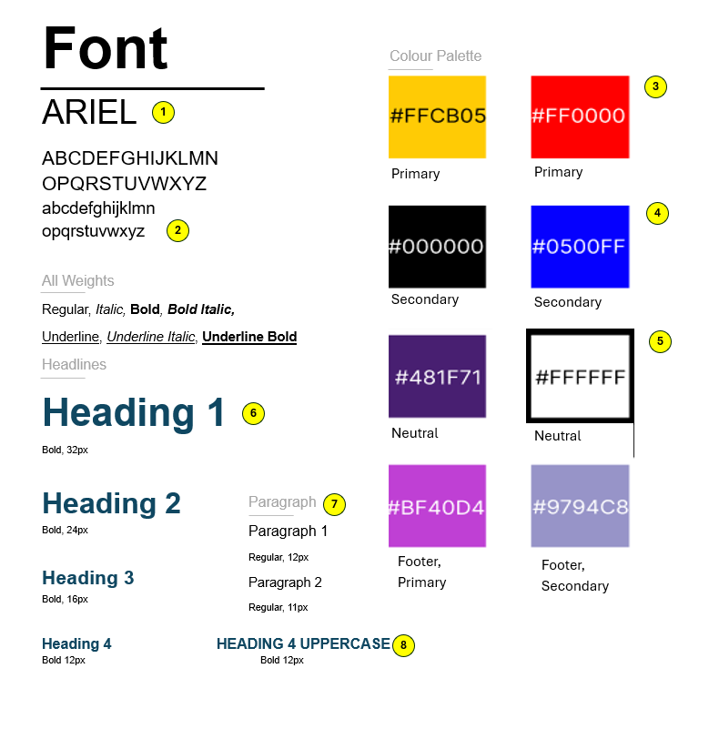

Style Guide

| 1 | 2 | Font Choice Rationale:
The Arial font was selected for its clean, modern aesthetic and excellent readability across various screen sizes and devices. As a widely-used, industry-standard sans-serif font, Arial provides the following benefits:
- High legibility: The clear, simple letterforms ensure easy readability of headings, body text, and UI elements on your Pokémon website.
- Versatility: The font's availability in a range of weights (regular, italic, bold, etc.) allows you to establish visual hierarchy and emphasize important information.
- Familiarity: Users are accustomed to seeing Arial used across many digital platforms, so it will feel natural and accessible on your site.
- Cross-platform consistency: Arial is a web-safe font, ensuring consistent rendering across different browsers and devices.
Overall, the Arial font aligns well with the modern, approachable tone you want to establish for your Pokémon-themed website. Its clarity and versatility will make for an optimal user experience.
Color Palette Rationale:
The color palette you've selected draws inspiration directly from the iconic branding and aesthetics of the Pokémon franchise. This strategic approach will help create a strong, recognizable visual identity for your website.
| 3 | Primary Colors:
- #FFCB05 (yellow) and #FF0000 (red): These are the two primary colors featured in the official Pokémon logo. These bold, vibrant hues evoke feelings of energy, adventure, and nostalgia that are central to the Pokémon brand.
Using these iconic colors as your primary palette will instantly connect your website to the larger Pokémon universe, creating a sense of familiarity and brand recognition for your users.
| 4 | Secondary Colors:
- #000000 (black) and #0500FF (blue): Chosen to provide balance and contrast to the primary palette. Black offers a clean, sophisticated look, ensuring readability and hierarchy, while blue complements the adventurous spirit of the Pokémon brand.
| 5 | Neutral Colors:
- #481F71 (purple) and #9794C8 (grey): These serve as neutral accents within the color scheme. The muted purple adds uniqueness and emotion, while grey provides a neutral background, allowing primary and secondary colors to take center stage.
This curated color palette aligns with the Pokémon brand identity, creating an immediate sense of recognition and authenticity. The primary, secondary, and neutral groupings provide a flexible system for consistently applying colors across your website design.
| 6 | Heading Hierarchy Rationale:
The heading styles you've outlined, from Heading 1 to Heading 4 UPPERCASE, establish a clear and intuitive typographic hierarchy that will help organize content and guide users through your website.
- Heading 1 (32px, Bold): Used for the most important, attention-grabbing sections of your site, like main page titles or hero content.
- Heading 2 (24px, Bold): Ideal for introducing key sections or subsections, providing visual distinction.
- Heading 3 (18px, Bold): Suitable for further subdividing content, such as in-depth article or product pages.
- Heading 4 UPPERCASE (16px, Bold): Works well for emphasizing minor section titles or labels within your UI.
This progressive decrease in font size, along with the consistent application of bold weight, creates a clear visual hierarchy that enhances navigability and comprehension.
| 7 | 8 | Paragraph Formatting Rationale:
The paragraph styles defined include regular, italic, and bold options at a 12px font size, offering flexibility for formatting body copy, captions, and supporting text:
- Regular (12px): Baseline paragraph style ensuring readability and accessibility.
- Italic (12px): Used to emphasize or highlight specific phrases or quotes.
- Bold (12px): Applied to key information or statistics to make them stand out within the body text.
This consistent 12px font size for paragraphs aligns with best practices for readability, while additional style options enhance visual hierarchy and focus.